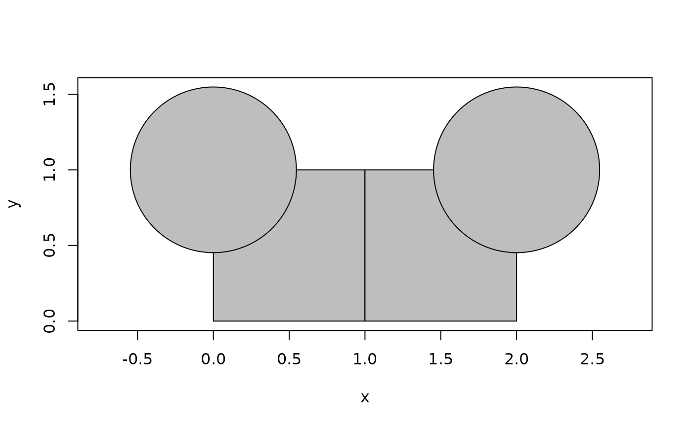
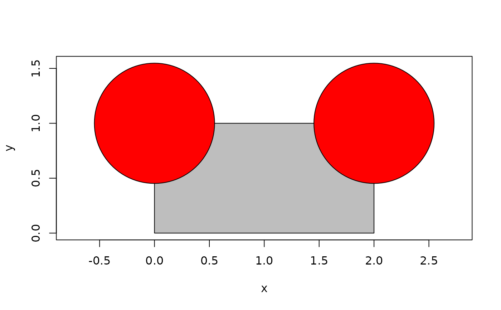
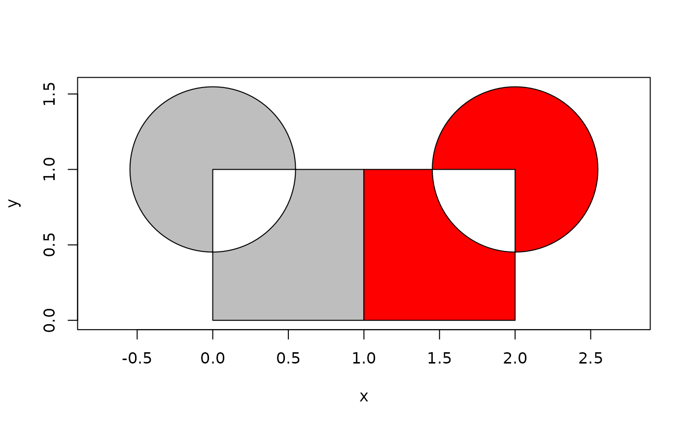

A polygon set is a collections of disjoint polygons with holes. Their main use is as intermediary representations during boolean operations and other operations that may result in more than one polygon. A polygon set is always valid as the polygons that are used during construction are validated beforehand. It is important to note that a polygon set created from two or more polygons may be topologically different from the polygons as they will be merged if they touch or overlap (effectively taking the union of them).
polygon_set(polygons)
is_polygon_set(x)
as_polygon_set(x, ...)
n_polygons(x)
locate_polygon(x, location)
n_faces(x)
vert_degree(x)
vert_neighbors(x)
polyline_verts(x)A polyclid_polygon vector or a list of these. In the latter
case the union of the polygons in each vector is used for the set.
A polyclid_polygon_set vector
Arguments passed on
A euclid_point2 vector giving locations
a polyclid_polygon_set vector
To get a complete overview of the boolean operations possible with polygon sets see the dedicated help page on the topic
Other polygons:
polygon()
Other sets:
polyline_set()
# Polygon sets are created from polygons
rects <- as_polygon(euclid::iso_rect(
euclid::point(0:1, 0),
euclid::point(1:2, 1)
))
circs <- as_polygon(euclid::circle(euclid::point(c(0, 2), 1), 0.3))
ps <- polygon_set(c(rects, circs))
plot(ps, col = "grey")

# If a list of polygons are provided, the polygons in each element are
# combined into one polygon set
ps <- polygon_set(list(rects, circs))
plot(ps, col = c("grey", "red"))

# As can be seen, the two rects have been merged as they were touching at the
# edge
# You can get the number of polygons contained in a set as well as convert it
# back into polygons
n_polygons(ps)
#> [1] 1 2
as_polygon(ps)
#> <2D polyclid_polygons [3]>
#> [1] [Boundary: 6, Range: <<0, 0>, <2, 1>>, Holes: 0]
#> [2] [Boundary: 100, Range: <<-0.548, 0.452>, <0.548, 1.55>>, Holes: 0]
#> [3] [Boundary: 100, Range: <<1.45, 0.452>, <2.55, 1.55>>, Holes: 0]
# You can also extract a specific polygon from a set
as_polygon(ps, which = 1)
#> <2D polyclid_polygons [2]>
#> [1] [Boundary: 6, Range: <<0, 0>, <2, 1>>, Holes: 0]
#> [2] [Boundary: 100, Range: <<-0.548, 0.452>, <0.548, 1.55>>, Holes: 0]
# Alternatively by specifying a point to locate the polygon to get
locate_polygon(ps, euclid::point(2, 1))
#> <2D polyclid_polygons [2]>
#> [1] [Boundary: 6, Range: <<0, 0>, <2, 1>>, Holes: 0]
#> [2] [Boundary: 100, Range: <<1.45, 0.452>, <2.55, 1.55>>, Holes: 0]
# When using boolean operations on polygons (or polygon sets) the result is a
# polygon set
p_sym_dif <- symmetric_difference(rects, circs)
plot(p_sym_dif, col = c("grey", "red"))
